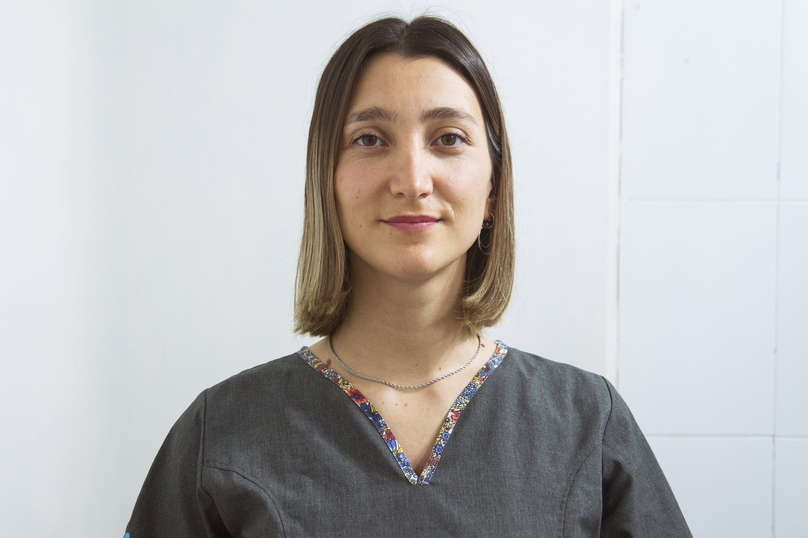

<div class="modal-body">

   <div class="row">
      <div class="col-md-12">
         <div class="exit-modal" data-dismiss="modal"><i class="fa fa-times"></i></div>

         <div class="profile">

            <div class="profile-icon">
               
               <ul class="profile-social alignc">
                  <li><a href="mailto: jeanette.espil@gmail.com"><i class="fa fa-envelope"></i></a></li>
               </ul>
            </div>

            <div class="profile-text">

               <span class="user-name">- VETERINARIA / CLINICA -</span>
               <h2 class="modal-title">Dra. Antonia Moraga</h2>

               <div class="row">
                  <div class="col-lg-6">
                     <h4 class="small-sub-title">- Bio -</h4>
                     <ul>
                        <li><strong>(Período: Noviembre 200 - 2019)</strong></li>
                        <li>
                           <p>
                              Facultad de Ciencias Veterinarias (FCV),
                              Universidad Nacional de La Plata (UNLP).
                           </p>
                        </li>
                        <li>
                           <p><strong>Asistencia a Congresos y charlas</strong></p>
                           <p>

                              Intoxicaciones mas frecuentes en la clínica de mascotas. Catedra de Bioquimica de la FCV
                              UNLP 2020.
                              Actualización en gastroenterología clínica. Vatuc.2020
                              Alimentación fisiológica ancestral en caninos. MV Clara Fontana . En curso
                              Primer congreso virtual AVA. 2020
                              XIX Congreso nacional AVEACA 2019
                              Primer encuentro equino en Don Joaquin 2019
                              Hemoparasitosis en la clínica diaria. MV:Pablo Borras . 2019
                           </p>
                        </li>
                        <li><strong>EXPERIENCIA LABORAL</strong></li>
                        <li>
                           <p>
                              2019-2021 VETERINARIA INTEGRAL DR FURNO
                              2020- actualidad, Veterinaria Magadascar
                           </p>
                        </li>
                     </ul>
                  </div>
               </div>
            </div>
         </div>
      </div>
   </div>
</div>